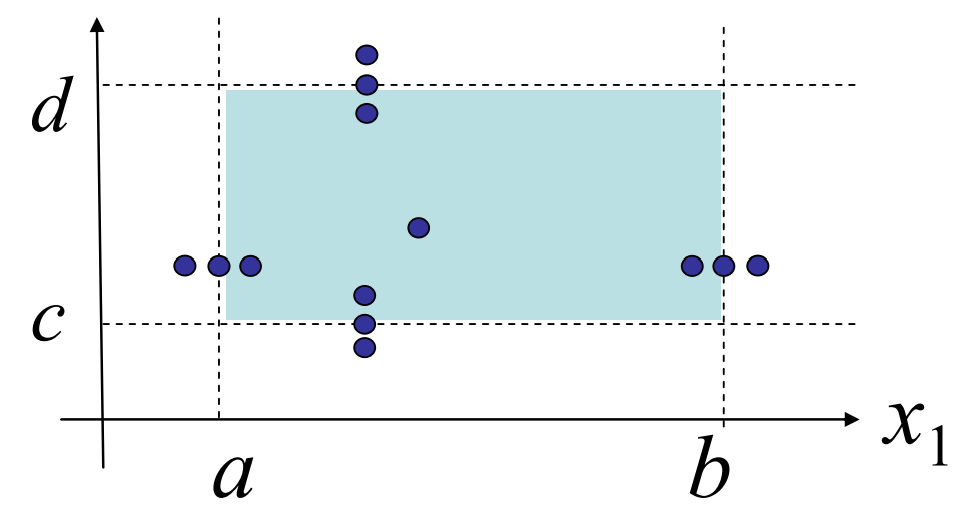

# 软件测试与测试优先的编程
# 测试介绍
# 验证
测试是验证的一种，验证包括：
- 形式推理：理论证明正确性
- 代码审查：别人查自己的代码
- 测试
# 测试目的
残留缺陷率 = 软件中的 bug 数 / 1000 行
- 1 - 10 defects/kloc: 典型工业软件
- 0.1 - 1 defects/kloc: 高质量软件，如
Java库 - 0.01 - 0.1 defects/kloc: NASA 级别
# 测试等级
- 单元测试：函数层级上
- 集成测试：多个类/包/组件/子系统层级上
- 系统测试：整个系统层级上
- 验收测试：层级最高
# 静态/动态测试
- 静态测试：不运行代码，靠眼睛看。如 reviews, walkthroughs, inspections
- 动态测试：用测试用例运行
# 白盒测试
| 黑盒测试 | 白盒测试 |
|---|---|
| 不考虑内部实现，对程序外部表现的行为进行测试 | 考虑内部实现细节，对程序内部代码结构测试 |
# 测试优先的编程
# 步骤
- 先写 spec
- 再写符合 spec 的测试用例
- 最后写代码。执行测试，有问题再改
# TDD
TDD (Test-driven development)：测试驱动开发
# 划分测试用例区域
# 等价类划分
将被测函数的输入域划分为等价类，从中导出测试用例
基于假设：相似的输入会展示相似的行为
# 边界值分析
大量的错误发生在输入域的边界而非中央
合理的测试用例分布：
- 略低于最小值
- 最小值
- 略高于最小值
- 正常值
- 略低于最大值
- 最大值
- 略高于最大值

# 覆盖率测试
# 覆盖度
- 函数覆盖
- 语句覆盖
- 分支覆盖：
if,while,switch,for都用true或false测试 - 条件覆盖：
if,while,switch,for的每一种情况都覆盖 - 路径覆盖：在程序控制流图的基础上，通过分析控制结构的环路复杂性，导出基本可执行路径集合，设计测试用例的方法。 该方法把覆盖的路径数压缩到一定限度内，程序中的循环体最多只执行一次。 设计出的测试用例要保证在测试中，程序的每一个可执行语句至少要执行一次。
# 测试效果
- 测试效果：路径覆盖 > 分支覆盖 > 语句覆盖
- 测试难度：路径覆盖 > 分支覆盖 > 语句覆盖
- 覆盖率要求
- 工业上通常要求 100% 语句覆盖，除非有极少见的不可达语句
- 100% 的分支覆盖更加艰难
- 100% 的路径覆盖几乎不可能
# 自动化测试和回归测试
# 自动化测试
测试驱动：能够进行自动化测试的代码
自动调用被测函数、自动判定测试结果、自动计算覆盖度
并非自动生成测试用例。测试用例还需要我们自己编写
# 回归测试
一旦程序被修改，重新执行之前的所有测试
一旦修复一个 bug，将触发 bug 的输入加入到测试
# 编写测试策略文档
测试策略
/*
* Testing strategy
*
* Partition the inputs as follows:
* text.length(): 0, 1, > 1
* start: 0, 1, text.length()
* text.length() - 1,
* 1 < start < text.length(),
* text.length() - start: 0, 1, even > 1, odd > 1
*
* Include even- and odd-length reversals because
* only odd has a middle element that doesn't move.
*
* Exhaustive Cartesian coverage of partitions.
*/
1
2
3
4
5
6
7
8
9
10
11
12
13
14
15
2
3
4
5
6
7
8
9
10
11
12
13
14
15
测试方法注释
// covers test.length() = 0,
// start = 0 = text.length(),
// text.length()-start = 0
@Test public void testEmpty() {
assertEquals("", reverseEnd("", 0));
}
1
2
3
4
5
6
2
3
4
5
6